MY ACTIVITY
WEEK-1:
I have visited the area and noticed all blood deficient problems in the area and started my community service project with all the detailed information about the area.
I have went to the area Sachivalayam to take Permission to start my survey and I took Permision letter and started project in the area.
For my understanding purpose I have researched about blood groups and blood levels and known the brief information which helps me to easily complete my project.
For my understanding purpose I have researched about blood groups and blood levels and known the brief information which helps me to easily complete my project.
For my understanding purpose I have researched about blood groups and blood levels and known the brief information which helps me to easily complete my project.
I have conducted a survey and asked the people appropriate questions to know about their deficiency problems and I am succeeded in my survey and got a good response.
I have continued my survey and known some more information and gathered some pictures while surveying and decided to create awareness among them about blood groups and blood levels.
WEEK-2:
On this day I have visited the blood bank near me to know about blood groups and blood levels totally and to create awareness among the people in our locality there I known the detailed information which is useful to my community service project.
Rare are – O-, B-, A-, AB-
Common are – O+, A+, B+, AB+
On this day I knew about what type of food diet has to be taken to increase the blood levels in people if they follow the food diet then their blood levels increase.
On this day I knew about the diseases caused by the blood deficiency because many people didn’t know about the diseases of blood deficiency to create awareness.
On this day I have conducted a survey to know whether the people faced the symptoms of blood deficiency and to know about their health condition.
Dizziness, light headedness, or feeling like you are about to pass out
A fast or unusual heartbeat
Pain, including in your bones, chest, belly, and joints
Problems with growth, for children and teens.
On this day I again conducted a survey to know about their food diet that causes blood level increase or decrease and told them to take a proper diet of food to maintain their health condition well and good.
WEEK-3:
In this day we found out that Antibodies are the proteins found in plasma,antigens are the protein molecules found on the surface of red blood cells and they play a vital role in formation of blood and blood level maintenance also.
In this day we known about the rules and regulations of donating blood like age limit of donation and average weight of donor and average blood level donor must have and how many times donor can donate per year and advantages also.
Age-limit from above 18 to below 67.
Average weight from 50Kgs to more.
The donor must have blood level of 13.5 and above.
In this day we known that donation of blood is good for health like.
Reducing stress and improving emotional well-being
Helping vital organs like the heart and the red blood cells.
Preventing and reducing chronic diseases such as stroke and cancer.
Maintaining a healthy weight and preventing aging.
Getting rid of negative feelings and providing a sense of belonging.
In this day we have conducted a survey to know the blood groups of the people in our locality in that survey we have noticed that there are different blood groups are there and some having common as well so successfully completed the survey.
In this day we again conducted a survey to know the blood levels of the people in our locality and known that many people have blood deficiency.
In this we went to survey what type of food the people are eating to maintain their health condition and blood level well and good in that survey we known that many people’s diet plan and food are not well so we decided to aware them about their blood level and health.
WEEK-4:
-
In this day we have created awareness about blood groups among the people of our locality like the blood group types and other things about blood.
-
In this day we have given awareness about the blood level maintenance in maintaining good health and how to improve blood level.
-
In this day we created the awareness among the people on food diet to improve blood level and to maintain good health.
Eat Iron-Rich Foods Like Red Meat, Chicken, And Fish ...
Have Vitamin C-Rich Foods Like Citrus Fruits, Broccoli, And Spinach ...
Load Upon Folate-Rich Foods Like Leafy Greens, Beans, And Liver ...
Supplement With Vitamin B12 ...
Have Copper-Rich Oysters, Beans, And Potatoes ...
-
In this day we created awareness on food diet which has to be taken after donation of blood and the measures that has to be taken after blood donation.
-
In this day we had given a detailed and clear information to the people regarding the blood groups and blood levels.
-
In this day we have conducted a survey to get the overall conclusion and peoples opinion mean did they understood everything well or not and we got a conclusion that the people understood clearly about blood groups and blood levels.
WEEK-5:
In this day we wanted to know whether the people understood everything about blood groups and blood levels.
In this day we known that many people did not understood well so we decided to explain them detailly about blood groups and blood levels.
The A, B, and O blood types evolved at least 20 million years ago in a common ancestor of humans and other primates.Humans and all other apes share these blood types, inherited from a common ancestor.
red blood cell, cellular component of blood, millions of which in the circulation of vertebrates give the blood its characteristic colour and carry oxygen from the lungs to the tissues
Platelets: Small, colourless fragments critical for blood clotting.
Plasma: The liquid that holds platelets, consisting of about 90% water and 10% ions, proteins, nutrients, wastes, and dissolved gases.
The universal donor blood group is O negative (O-).
The universal recipient blood group is AB positive (AB+).
In this day we have conducted a survey for overall understanding and we have successfully completed and this time the understanding is perfectly happened with the support and cooperation of people.
WEEK-6:
In this day we to analyze the blood groups which are taken in the survey and We have analyzed the samples and got best results.
In this day we wanted to analyze the blood pictures which are taken in the survey and We have analyzed the samples and got best understanding
The AB-negative is considered the rarest blood type.
The O-positive is the most common type.
Anaemia, which means fewer red blood cells.
Decreased oxygen-carrying capacity of the blood.
Slow functioning of body parts and weakness due to the less supply of oxygen.
Respiratory problems.
Tiredness and lack of energy.
It carries oxygen and nutrients throughout your body.
It forms blood clots to manage bleeding.
It protects your body from infections.
It carries waste products.
It regulates your body temperature.
In this day we have Successfully completed our project by getting a overall conclusion in our project We concluded that the people understood about everything very well and our project is successfully completed.
 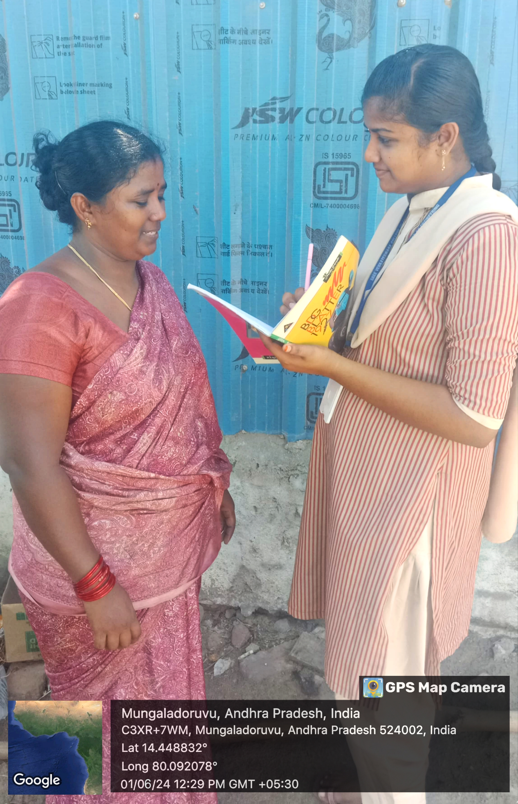
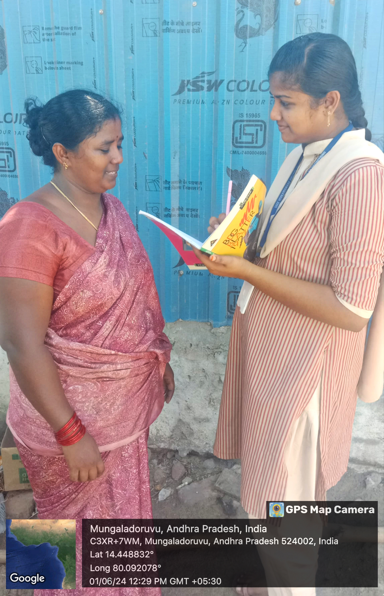


 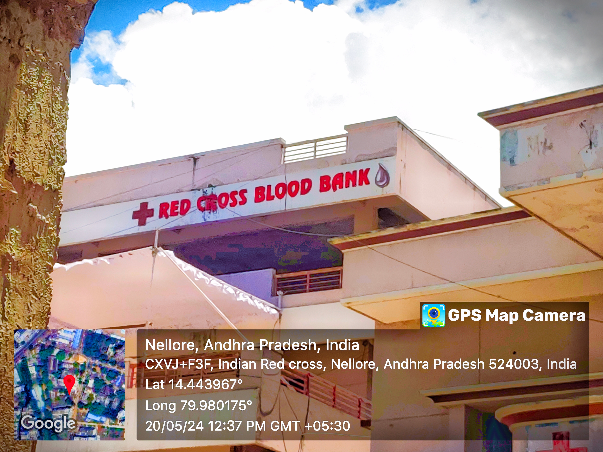
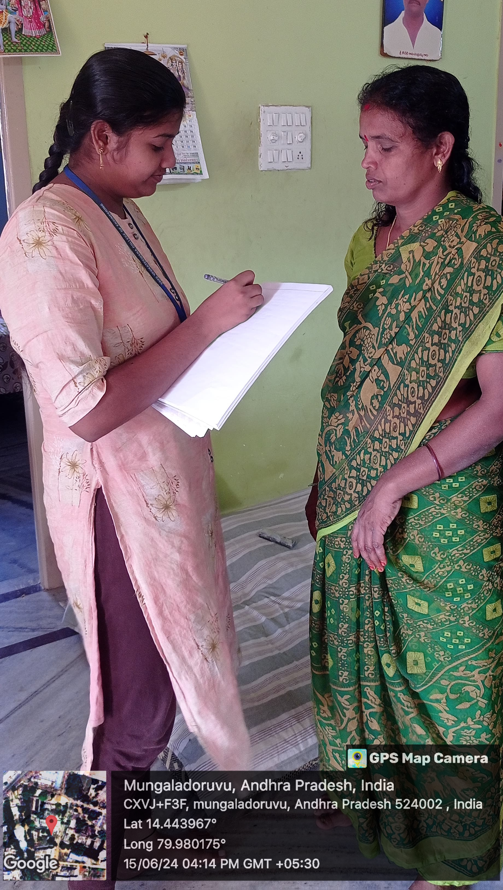
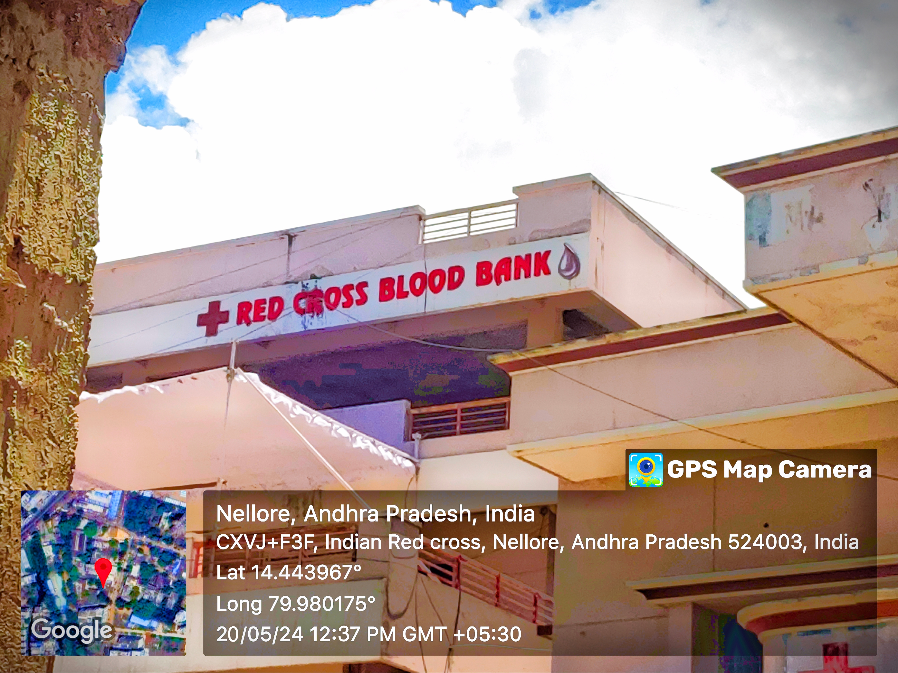
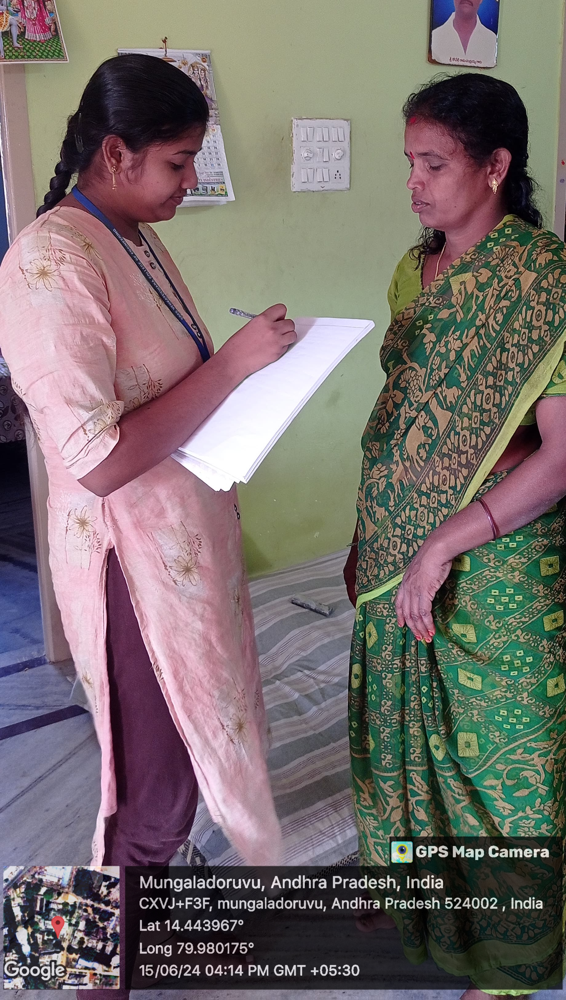
 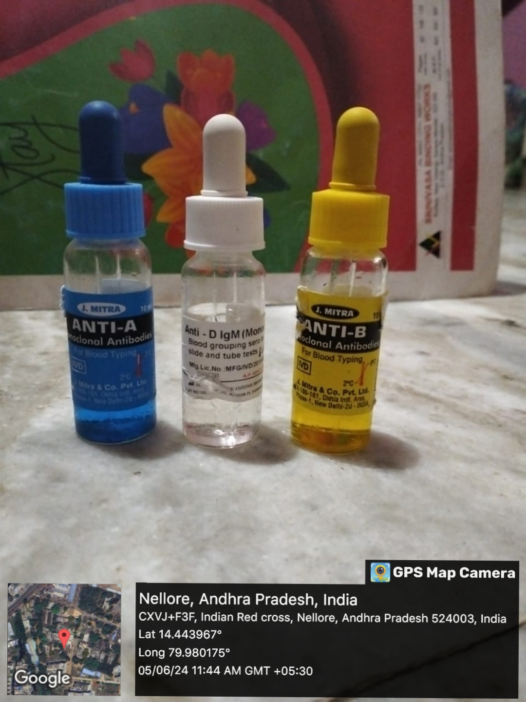
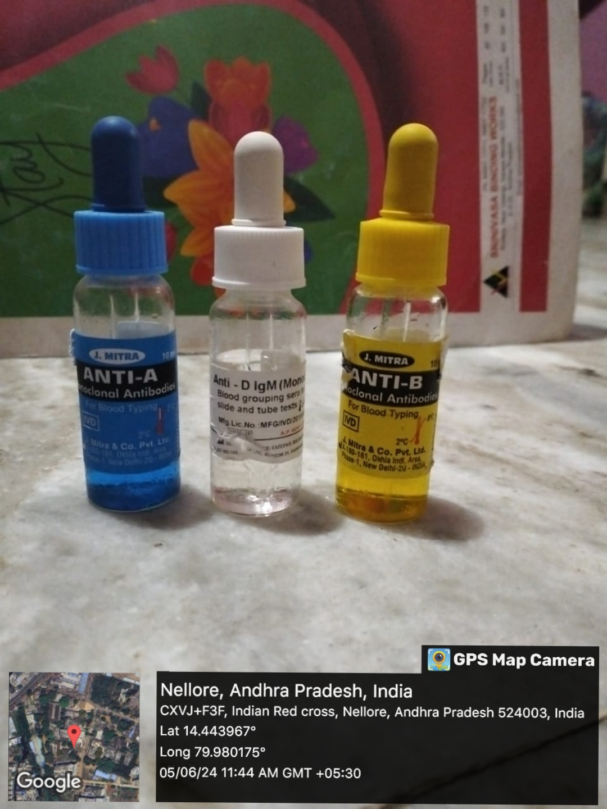

 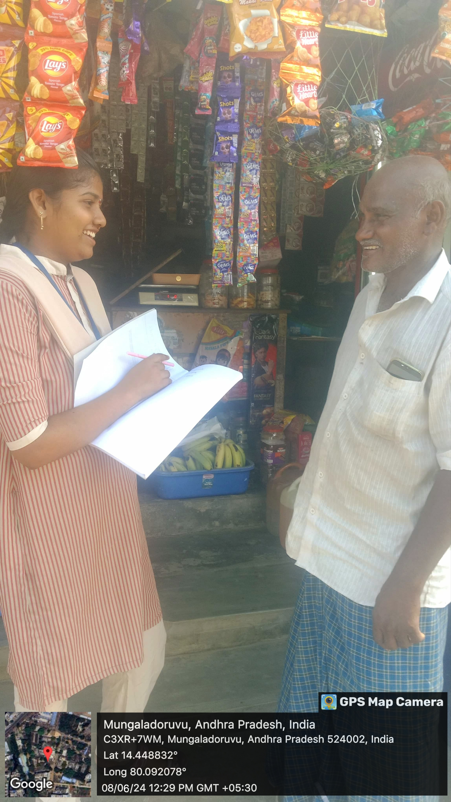
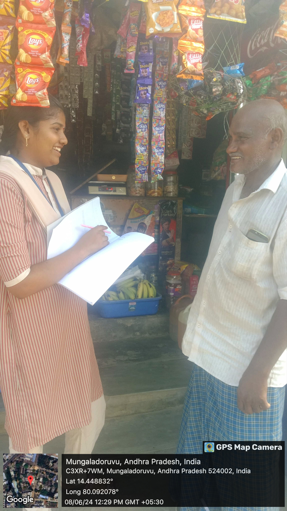
 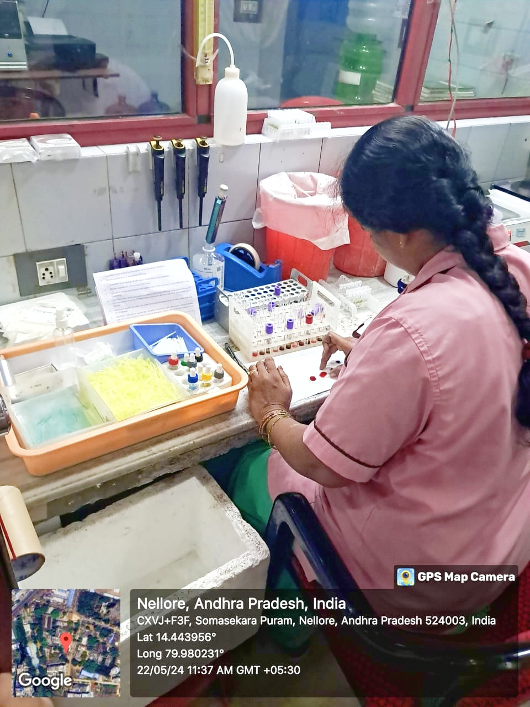
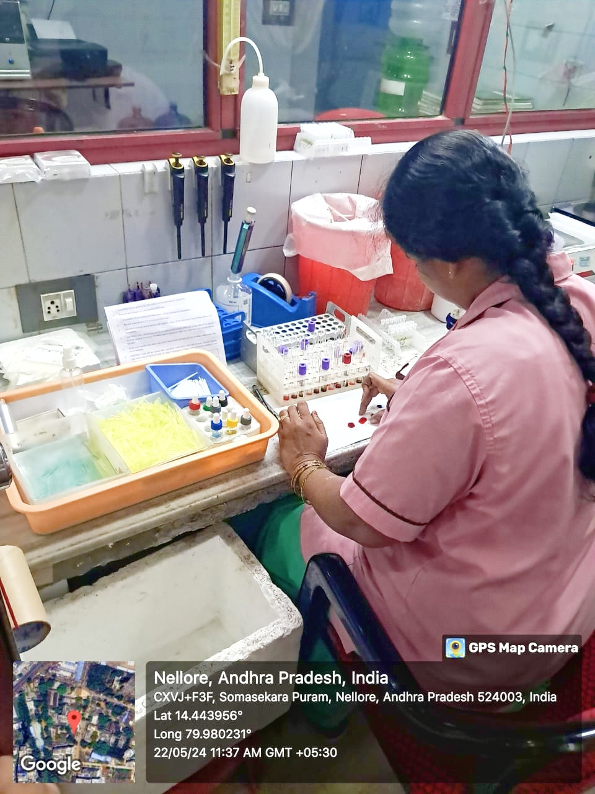